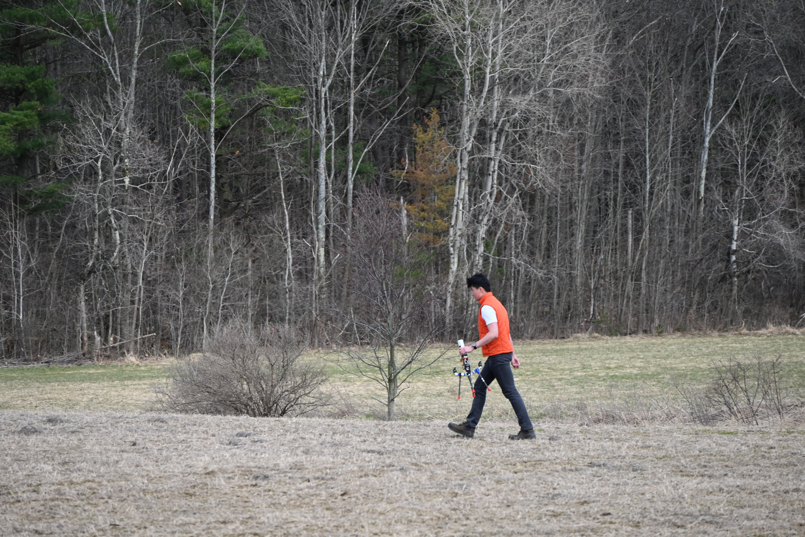

Building and Testing Mission-Critical Hardware.
I am an Electrical and Computer Engineering student at Cornell University passionate about designing and integrating the embedded systems and avionics for next-generation aerospace and defense technology.
MAVRIK: Embedded Systems
MAVRIK, Inc. — Lead Electrical Engineer
As Lead Electrical Engineer, I was responsible for the entire electrical architecture and systems integration for the HATCHET Group 3 UAS. My work covered three primary domains: modular payload design, redundant communications, and flight-critical avionics.
The Challenge: Mission-Critical Integration
The HATCHET UAS was designed for complex, long-range missions with high-stakes payloads. It required a highly reliable, robust, and modular architecture. My role was to design these systems from the ground up, ensuring all subsystems—power, flight control, networking, and payloads—worked together seamlessly and reliably.
The Solution: A 3-Part Architecture
I architected the drone's entire electrical system to be resilient and modular:
- Modular Payload Design: I prototyped and designed an embedded hardware PCB in KiCad to manage modular payload release mechanisms. This board was responsible for interfacing STM32 and Cortex-M7-based microcontrollers with an NVIDIA Jetson Nano companion computer. I also developed the low-level C++ code to interface this payload board with the custom companion software running Linux[cite: 14].
- Redundant WAN Failover: To ensure persistent communication, I architected a redundant networking solution using Starlink, DoodleLabs, and LTE. This system automatically failed over through an AWS Lightsail instance to maintain a constant link between the ground station and the onboard companion computer.
- Flight-Critical Avionics: I implemented all flight-critical communication protocols from the Cube Orange flight controller, including managing ESCs (via CAN/PWM) and the uBlox GPS (via I2C + UART). This also involved customizing MissionPlanner parameters to support rapid, reliable deployment of over 10 drones.
The Outcome: US Army xTech Winner
My leadership in electrical design and systems integration was a key factor in our success. This robust and reliable architecture allowed the HATCHET UAS to perform flawlessly, culminating in our team winning the US Army's xTech Overwatch event in October 2025[.
LawnDart: 350+ mph UAS
Cornell AutoDrone — Electrical Subteam Lead
As Electrical Subteam Lead for the 'LawnDart' project, I was responsible for the entire electrical system design, integration, and validation. My work involved directing the core flight systems architecture and engineering a custom test stand to verify our high-performance components for the 350+ mph world-record attempt.
Systems Architecture & Integration
I directed the implementation of all critical electrical systems for the aircraft itself, including the RX/TX and FPV data links, and designed a robust, high-discharge power architecture. A significant part of my role was performing extensive troubleshooting on both the hardware and INAV firmware to achieve reliable, high-speed flight tests.
The Validation Problem: An Unverified Motor
To break the record, optimization was key. We could not trust the vendor's motor data, as even a small efficiency loss would mean failure. We needed a reliable way to measure real-world performance—specifically power draw, thrust, RPM, temperature, and EMI noise—before risking the aircraft.
The Solution: A Custom Test Stand
I led the electrical design of the custom test stand. I leveraged Ardupilot's internal logging for power, temperature, and EMI data. I then architected the system to capture the remaining variables, integrating an analog force sensor and a laser/LED RPM sensor that fed data into an Arduino. I developed the C++ code to process these inputs and a Python script to log the serial monitor data for post-analysis. To ensure data integrity, we calibrated the force sensor against standard masses and cross-validated the RPM sensor against the flight controller's readings.
The Outcome: A "Successful Failure"
The test stand functioned perfectly, and the results were transformative. The data proved the motor was the problem: it achieved only 75% of theoretical thrust and, critically, burst into flames in two of four tests. My EMI measurements also quantified a significant noise floor, proving that avionics shielding was a non-negotiable requirement. This project demonstrated the value of test-driven development. The data my stand collected was the critical enabler that allowed our team to find and resolve a mission-ending flaw *before* it caused a catastrophic in-flight failure.
PCBA: High-Speed STM32H7
Sole Designer (Personal Project)
After designing the MAVRIK payload board which relied on an external module, I saw an opportunity to improve. I challenged myself to design a fully integrated, high-speed board to transfer 4K video from a micro SD card to USB-C.
The Challenge: High-Speed on a 2-Layer Board
I selected the STM32H743 microcontroller for its high-throughput capabilities. To make it a true challenge, I restricted the design to a 2-layer PCBA which presented a significant signal integrity (SI) and routing problem for the high-speed signals.
The Solution: Impedance-Controlled Layout
This project forced me to learn and meticulously apply SI principles. I carefully routed the high-speed USB 2.0 differential pairs with calculated impedance and ensured the SDIO data and clock lines were as short as possible. The layout also included strategic decoupling and bypass capacitors precisely at the VDD pins of the H7 core to ensure power rail stability.
The Outcome: A Fabricated Deep-Dive
The board was successfully fabricated and served as my practical deep-dive into the firmware side, as I began developing the bootloader and drivers in the STM32 Cube IDE This project proved my ability to manage the trade-offs between performance and manufacturability on a complex, constrained, high-speed digital design.
Personal Projects
Multi-Core RISC-V Processor
Computer Architecture Final Project • August 2024 – December 2024
Developed hardware and software for a multi-core RISC-V architecture , creating a custom ring network interconnect with dedicated routing and arbitration units to support thread-level parallelism through multi-threaded C programs.
FET Amplifier Design and Optimization
Microelectronics Final Project • January 2025 – June 2025
Designed and constructed a cascaded FET amplifier and cascode amplifier using ALD1105 chips. Characterized amplifier performance by measuring voltage gain, output resistance, and maximum voltage swing to ensure transistors remained in the saturation region and minimized distortion of the input signal.
